📋 Общая информация
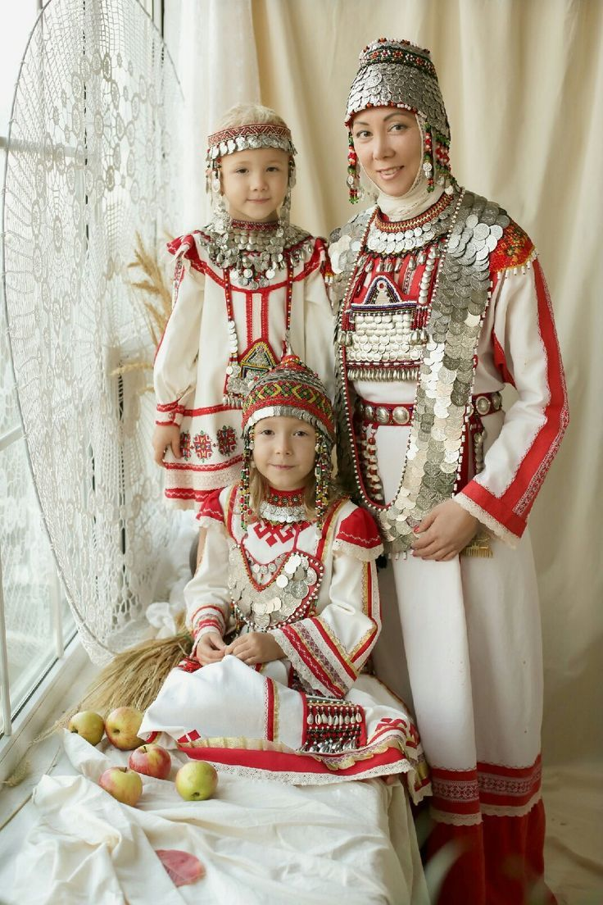
Численность
В России проживает около 1,4 миллиона чувашей. Основное население Чувашской Республики. Также проживают в Татарстане, Башкортостане, Ульяновской области.
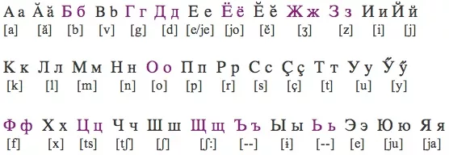
Язык
Чувашский язык — единственный сохранившийся представитель булгарской группы тюркских языков. Имеет архаичные черты, отсутствующие в других тюркских языках. Использует кириллицу.
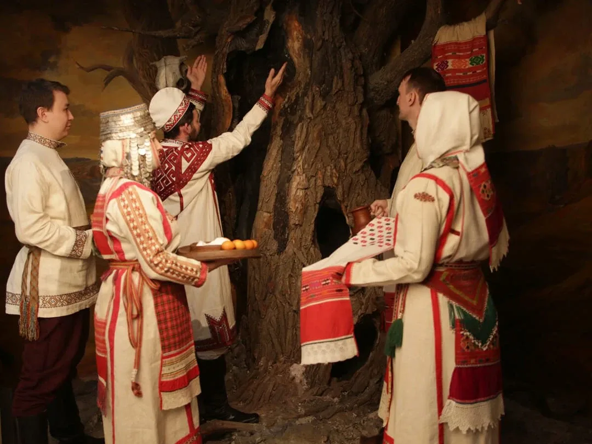
Религия
Православное христианство с сильным влиянием дохристианских верований. Сохранились языческие культы: поклонение огню, воде, священным деревьям, предкам.
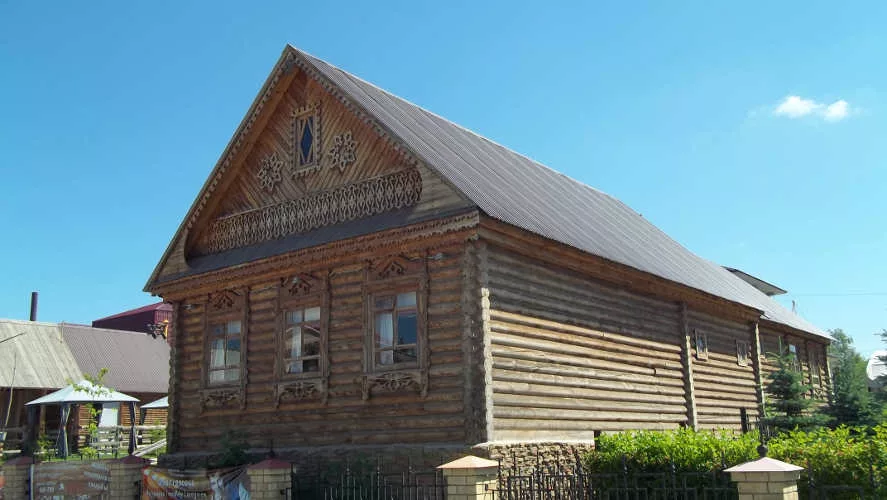
Расселение
Чуваши расселены по Поволжью и Приуралью. Крупные диаспоры в Казахстане, Украине, Сибири и за рубежом — в США, Австралии, Финляндии. Три основных этнографических группы: верховые, низовые, анатри.
🎭 Традиции и культура
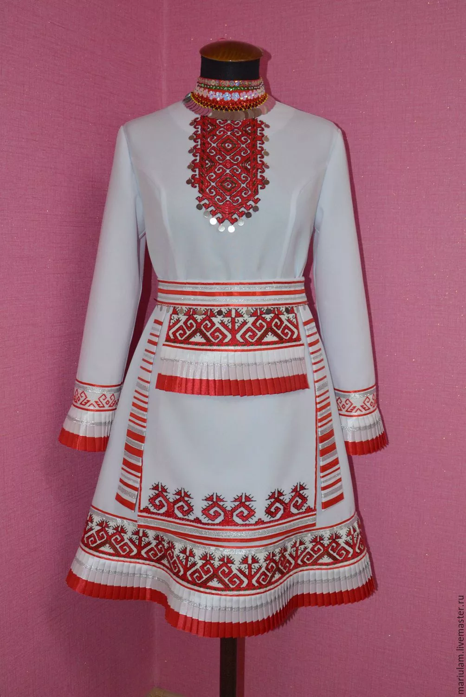
Национальный костюм
Яркий, богато украшенный костюм с уникальной вышивкой. Женщины носили «сукман» (рубаха-каftан) с геометрическими орнаментами, головной убор «тухья». Мужчины — рубаху с узорчатым поясом.
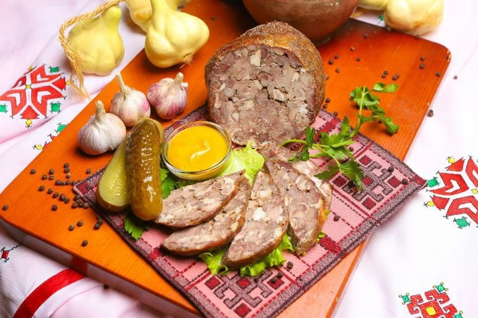
Кухня
Шартан (пшенная каша с тыквой), варман (лапши с мясом), хушъю (блины), капустные пироги. Традиционные напитки — брага, пиво (чуваши — мастера пивоварения).
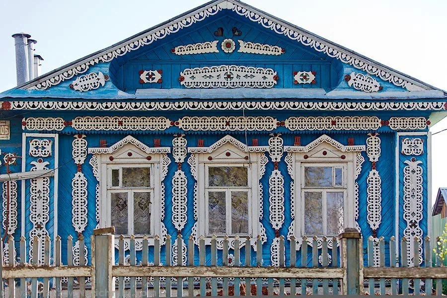
Жилище
Деревянная изба с печью, обязательно украшенная резьбой. Особенность — «пыр» (внутреннее пространство дома), где проводили обряды. Село Ветлужские Вершины — этнографический музей.
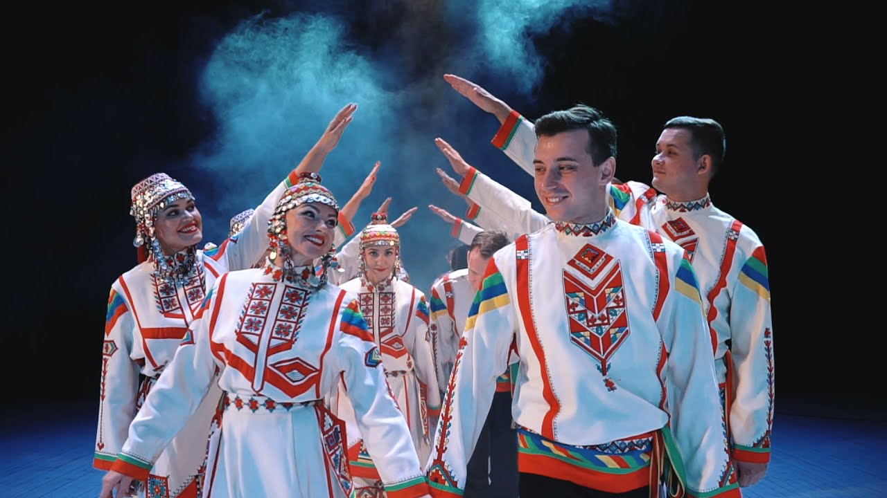
Музыка и танцы
«Каравай» и «хоровод» — народные танцы. Инструменты: каракус (скрипка), пури (барабан), шаптар (дудка). Особенность — пение «кай» (протяжные напевы).
🎬 Народные праздники
-
Акатуй (Нартукан)
Главный языческий праздник весны. Культ огня, очищение костром, жертвоприношения богам, гадания, народные игры. Символ обновления природы.
-
Семык (Семико)
Праздник полевых работ. Первый хлеб нового урожая, угощения, обряды на плодородие. Сохранился с языческих времён.
-
Кăрлач (Коляда)
Рождественские колядки. Хождение по домам с песнями-пожеланиями, маскарад, угощения. Смесь христианских и языческих традиций.
-
Уяв (Троица)
Праздник с языческими корнями. Украшение домов зеленью, гадания на суженого, прыжки через костёр, плетение венков.
📸 Галерея
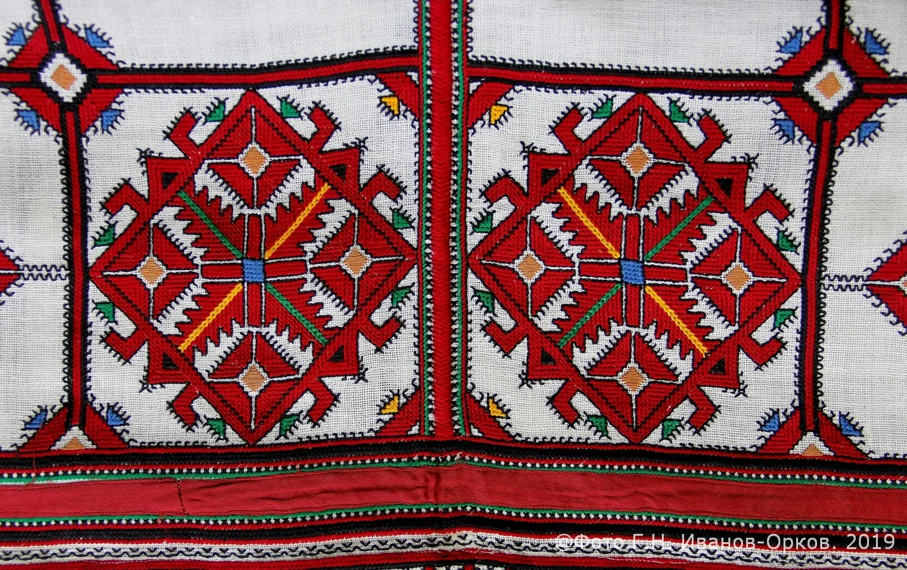
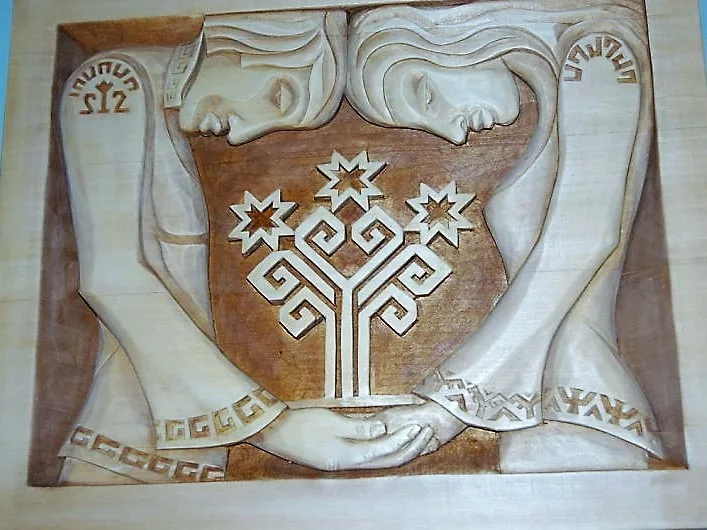
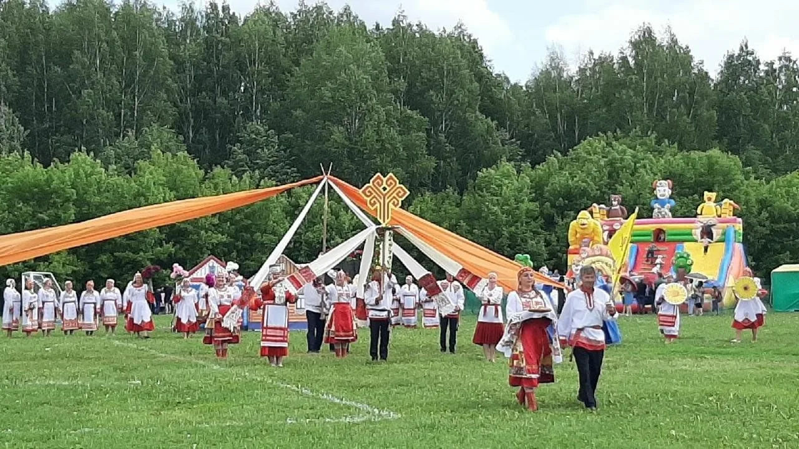
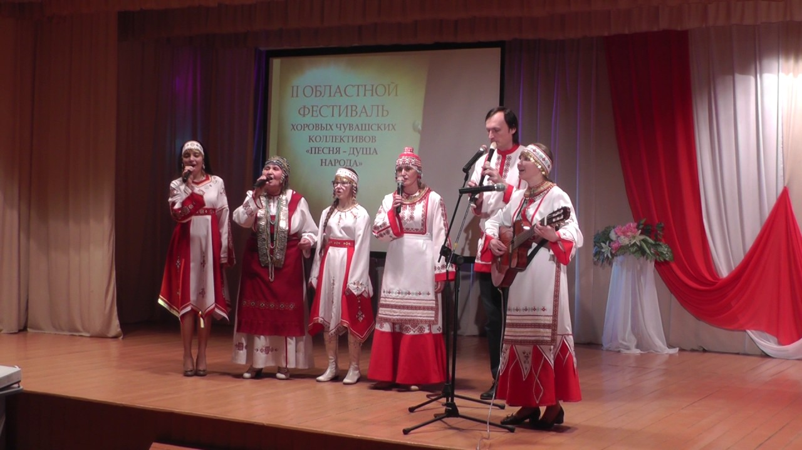
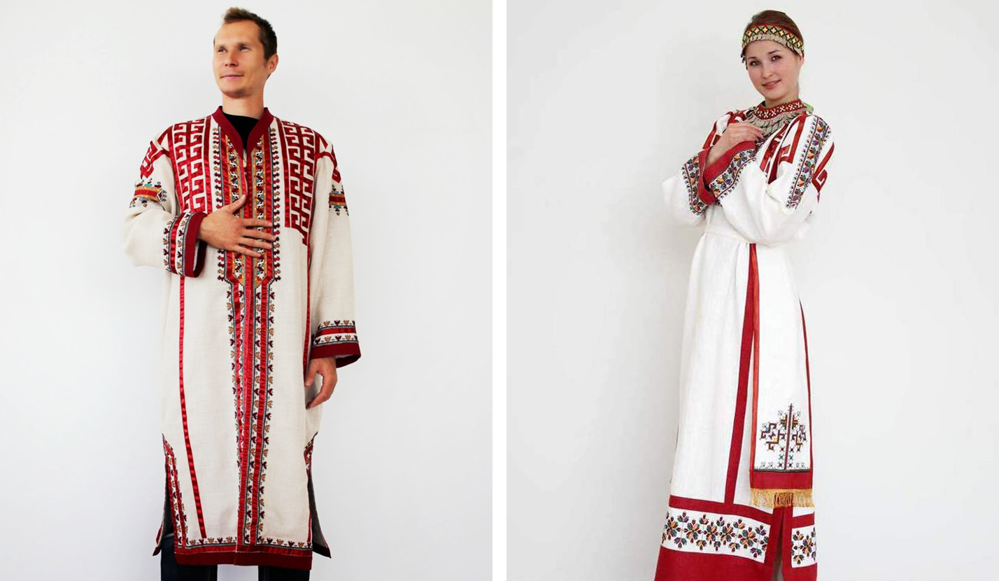
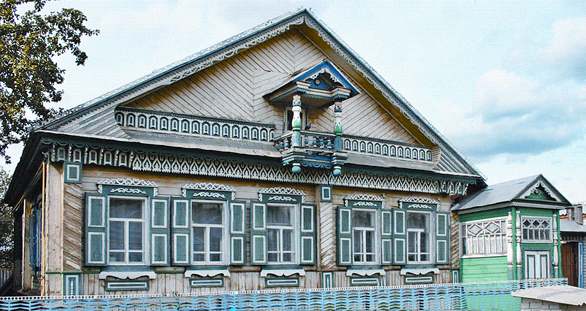
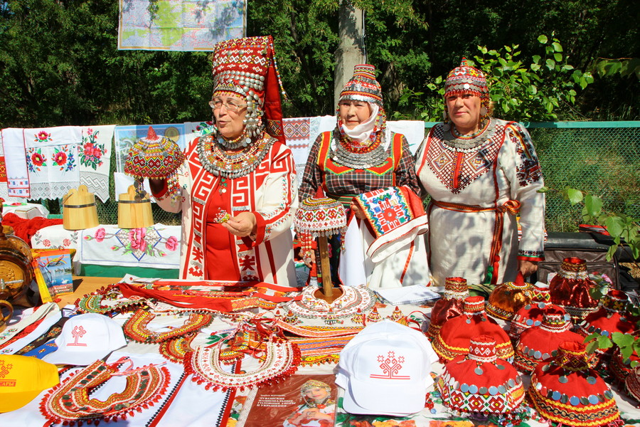
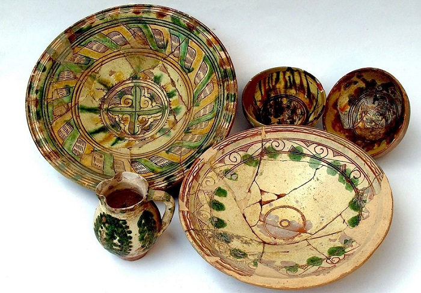
💡 Интересные факты
🏺 Потомки булгар
Чуваши — прямые потомки волжских булгар, которые не приняли ислам в X веке и сохранили языческие верования.
🍺 Пивовары
Чувашия — один из центров пивоварения в России. Традиция варить пиво уходит корнями в языческие времена.
🎭 Театр
Чувашский драматический театр — один из старейших национальных театров России (основан в 1918).
🎯 Викторина: Насколько хорошо вы знаете чувашскую культуру?
Ответьте на вопросы на основе информации с этой страницы.